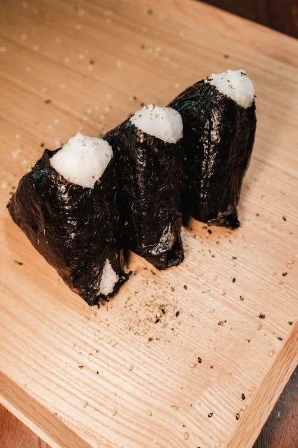

Onigiri
Back to Recipes

Onigiri, also known as rice balls, are a popular Japanese snack or meal item made from white rice formed into triangular or oval shapes and often wrapped in nori
(seaweed). They can be filled with a variety of ingredients, such as pickled plums (umeboshi), salted salmon, or tuna mixed with mayonnaise.
Ingredients
- 2 cups cooked Japanese short-grain rice
- 1/2 teaspoon salt
- 1/4 cup pickled plums (umeboshi), or other fillings like tuna, salmon, or vegetables
- Nori (seaweed)
- Sesame seeds (optional)
- Plastic wrap (optional)
Instructions
- Cook the rice according to package instructions, using a rice cooker or stovetop method.
- Once the rice is cooked, let it cool slightly. Add salt and mix gently.
- Wet your hands with water to prevent the rice from sticking. Take a small amount of rice (about 1/4 cup) and flatten it in your palm.
- Place a small amount of your chosen filling in the center of the rice.
- Carefully fold the rice over the filling and shape it into a triangle or oval shape. Make sure the filling is completely enclosed.
- If desired, wrap the onigiri in a strip of nori or sprinkle with sesame seeds for added flavor.
- Repeat the process with the remaining rice and fillings.
- Serve immediately or wrap in plastic wrap for later consumption. Onigiri can be enjoyed at room temperature or slightly warmed.
Notes
Onigiri can be customized with various fillings and seasonings. Common variations include adding furikake (a rice seasoning), using different types of nori, or incorporating vegetables like cucumber or avocado. They are often enjoyed as a quick snack, lunchbox item, or picnic food.
Serving Suggestions
Onigiri can be served with a side of pickled vegetables, miso soup, or a simple salad. They pair well with green tea or a light Japanese beer. You can also enjoy them as part of a bento box, alongside other dishes like tempura or sashimi.